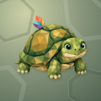
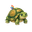
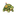
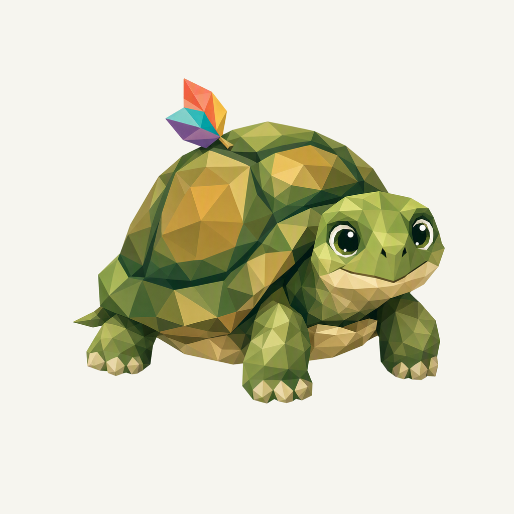
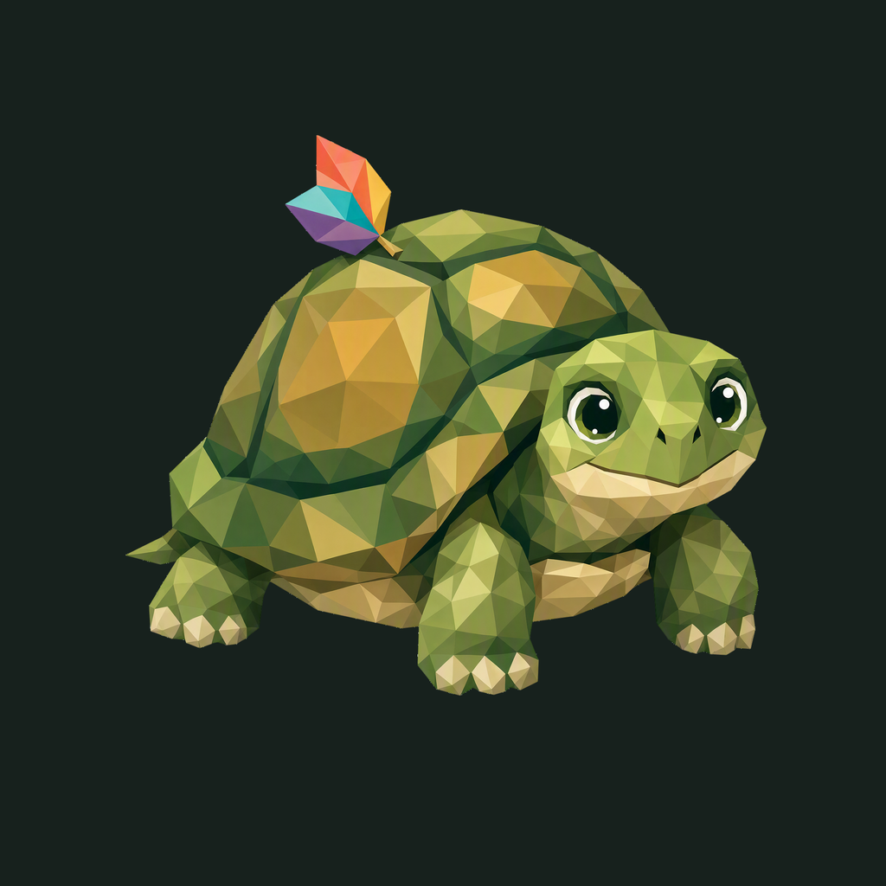

01 / Composition
A leaf along for the ride
A compact tortoise pauses during a slow step and turns toward the viewer. A domed shell, short neck and natural feet give it a clear whole-animal silhouette.
Animal family · Refined identity
A small tortoise pauses with one leaf along for the ride.
Adopted redesign · finishing 01
Native 2048 × 2048
01 / Composition
A compact tortoise pauses during a slow step and turns toward the viewer. A domed shell, short neck and natural feet give it a clear whole-animal silhouette.
02 / Drawing
Broad olive and ochre facets describe the shell without noisy scales. One folded coral, teal and violet leaf rises above the shell as the only colorful accessory.
03 / Presentation
Unequal broad scute impressions cross a deep sage field. Interrupted seams and soft contact shadows echo the shell with room to breathe.
Presentation tiles at 128/64 px; transparent artwork for small app and browser marks.



The complete animal and accessory have at least 275.5 px clearance from the actual rounded outline. Ten export sizes preserve one uniform placement. Small app/browser marks use the transparent foreground; fine facets and accessory details simplify at 16 px.
A designed background, with colors sampled from the exact native artwork.
Select a swatch to copy its hex value. The Backy UI primary (#2E8553) remains a separate product color.
One transparent foreground, checked on two contrasting backgrounds.


Azure Foundry · gpt-image-2 · one request · native 2048 × 2048
Loading study text…
The previous identity is historical context; the current brief defines the selected animal, gesture and palette. Frogie guides connected flat facets; these owner-provided boards guide the independent background, offset framing, and matte surface.


{kind=link}
{kind=link}
{kind=link}
{kind=link}
{kind=link}